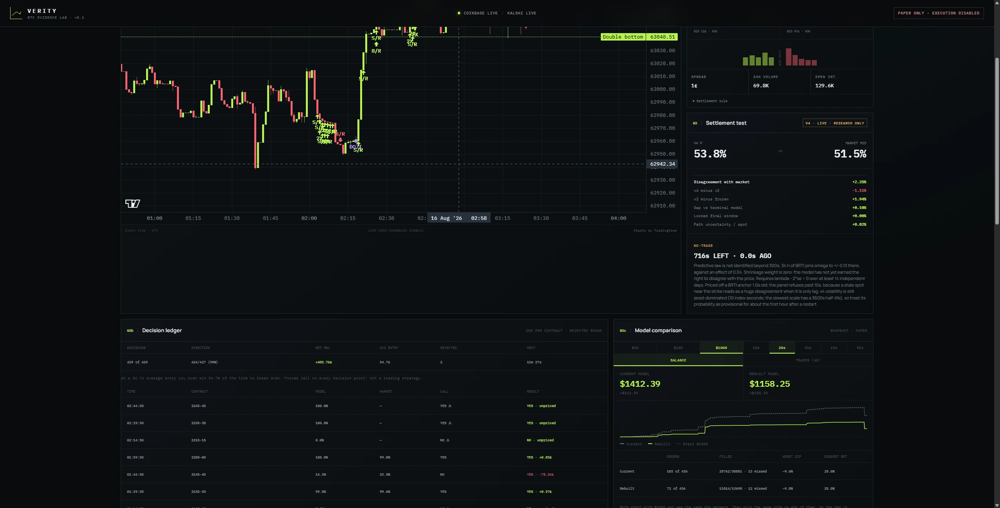

Everything about this invites you to fool yourself
Kalshi settles Bitcoin markets on a specific price at a specific minute. That makes them scoreable in a way most prediction markets are not. You can build an estimate of the settlement probability, compare it against what the market is charging, and check afterwards whether you were right.
Most people who try this lose money. The market is usually closer to correct than a model built on a desktop, and the ways to fool yourself are cheap. A lookahead bug. A timestamp that drifts by a few seconds. A backtest that never had to pay a spread. Every one of those produces a beautiful equity curve and an empty account.
So the design problem was never the model. It was building something that would tell me, out loud and in writing, when the model was wrong.
